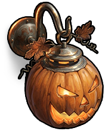

其他
物品 · 其他守夜人（南瓜灯）
Night Watch (Pumpkin Lamp)

Night Watch (Pumpkin Lamp) / 其他制造配方
制造配方每次制作产出 1 件；以下材料为制作一次的用量。


回收产物
回收产物物品说明
明亮又俏皮的节日南瓜灯，用来照亮房间的阴暗角落。
Night Watch (Pumpkin Lamp)

Night Watch (Pumpkin Lamp) / 其他每次制作产出 1 件；以下材料为制作一次的用量。
明亮又俏皮的节日南瓜灯，用来照亮房间的阴暗角落。